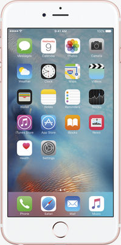

Apple Users May Regret Moving to ios 11 - Here's why
Oct 8, 2017

Apple officially launched iOS 11 on September 19 2017, but problems quickly became apparent. They again rolled out iOS 11.0.1 just a week later.
Backslash over Apple's iOS 11 upgrade has been increasing since, despite an update that was supposed to fix battery drainage issues and a large number of other glitches like restart problems.
iOS 11 provides amazing augmented reality functionality to iPhones and iPads, as well as a redesigned App Store, enhanced Siri, a Do Not Disturb feature for users, and the ability to share playlists with other iphone users in Apple Music.
However, iPhone users have reported a host of problems with the new operating system, which includes battery drainage issues, installation problems, speed lag, and problems with connectivity of WiFi and Bluetooth. The issues are so prevalent that many users reportedly have reverted to iOS 10.3.3. The scanning technology used for the new Animoji and iPhone X Face ID relies heavily on the camera, which is known to suck battery life.
Battery Drainage
The hardware enabling the iPhone X's Face ID technology is the A11 Bionic GPU. It requires a lot of power, which could explain the big discrepancy in the battery decay rate.
With iOS 10, the battery took an average of 240 minutes to drain to zero, while with iOS 11 it took an average 96 minutes to reach zero, based on an analysis of 50,000 heavy iPhone and iPad users who used the same devices with both systems, as per reports.
Reverting to the previous version of iOS could leave users vulnerable to hack attacks.We recommend that users should limit the number of apps that runs in background, as well as the number of apps that can access their location via GPS.
Ripple Effect
The iOS bugs and battery life issues could prove to be a long-term problem for Apple if the company doesn't adequately resolve performance issues, as per Market analysts.
"Individually this would be painful, but the firm should be able to weather it," he told TechNewsWorld, "but cumulatively, with the iPhone 8 quality issues, the iPhone X component shortages, and the lack of time to recover before year end, this could be ugly for the company."
Apple appears vulnerable, and Samsung's flagship Galaxy line might be able to steal some market share as a result, Enderle suggested.
Ironically, it was Samsung that went through a much more troubling quality control issue last year, when its Galaxy Note7 was banned from flights and all units ultimately were recalled after lithium ion batteries in some of the devices caught fire and even exploded.
"Apple may have bitten off more than it can chew, but they have done it in the past and that didn't hurt them in the long run," said Jeff Kagan, an independent telecom analyst.
Battery life and other OS upgrade issues turn off customers, but Apple has such a loyal following that it's likely to weather the storm, he told TechNewsWorld.
After updating his iPhone 6s to iOS 11, Tirias Research Principal Analyst Kevin Krewell ran into some battery drainage issues, he told TechNewsWorld.
The toll on battery life seems to get worse when using LTE, he said. After turning off a number of notifications, specifically targeting Facebook and Twitter, performance seemed to improve, Krewell said.
"I suspect there are some settings that Apple changed for better performance and responsiveness that had a negative impact on battery life," he said, noting that he has since received the 11.0.1 update, which is supposed to address battery life issues.
Device Dominance
Apple has a lot at stake. The iPhone has a U.S. installed base of about 141 million units as of July 1, up from 136 million units at the end of March and compared with 124 million units from a year ago, according to data from Consumer Intelligence Research Partners.
The iPhone 7 and 7 Plus accounted for about 48 million units, or 34 percent of the total installed base, CIRP data show. The 6s and 6s Plus accounted for 47 million, or 33 percent, and the 6 and the 6 Plus accounted for 39 million units, or 27 percent of the installed base.
Growth in the U.S. installed base has been slowing down, as nearly half of the U.S. adult and teen population have at least one of these devices, and fewer device users are willing to switch operating systems, noted Michael Levin, partner at CIRP.